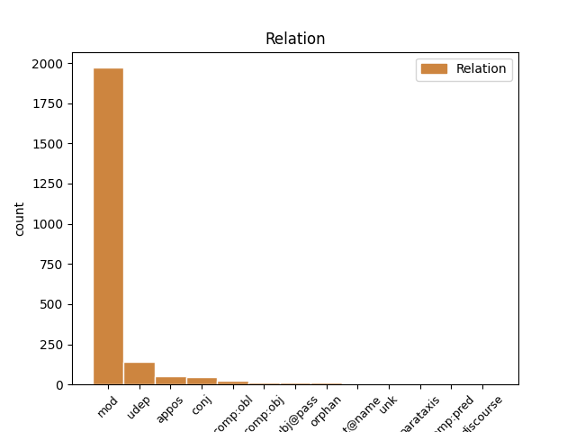
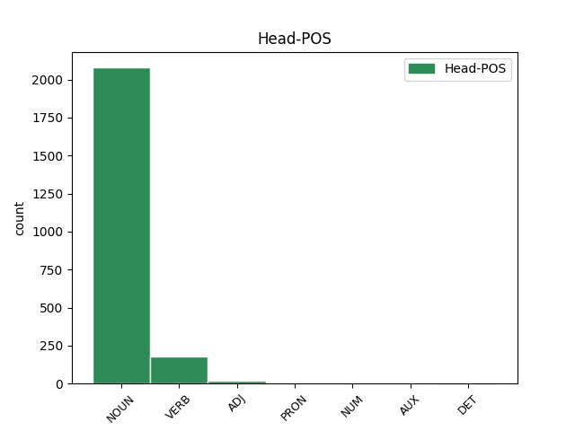
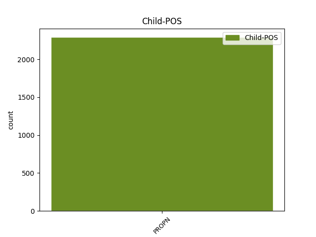

Distribution of features within this leaf



Agreement Rules sorted by frequency.
- When the dependent token is the modifer(mod) of the head token, and the head token is NOUN and the dependent token is PROPN.
1 No _ _ _ _ 0 _ _ _
2 arheoloģiskiem _ _ _ _ 0 _ _ _
3 izrakumiem _ _ _ _ 0 _ _ _
4 gan _ _ _ _ 0 _ _ _
5 redzams _ _ _ _ 0 _ _ _
6 , _ _ _ _ 0 _ _ _
7 ka _ _ _ _ 0 _ _ _
8 liela _ _ _ _ 0 _ _ _
9 dzimstība _ _ _ _ 0 _ _ _
10 neapstiprinās _ _ _ _ 0 _ _ _
11 ( _ _ _ _ 0 _ _ _
12 spriežot _ _ _ _ 0 _ _ _
13 pēc _ _ _ _ 0 _ _ _
14 māju _ _ _ _ 0 _ _ _
15 lieluma _ _ _ _ 0 _ _ _
16 ) _ _ _ _ 0 _ _ _
17 , _ _ _ _ 0 _ _ _
18 jo _ _ _ _ 0 _ _ _
19 liels _ _ _ _ 0 _ _ _
20 iedzīvotāju _ _ _ _ 0 _ _ _
21 skaita _ _ _ _ 0 _ _ _
22 pieaugums _ _ _ _ 0 _ _ _
23 līdzinātos _ _ _ _ 0 _ _ _
24 Āzijas Āzija PROPN npfsg4 Case=Gen|Gender=Fem|Number=Sing 25 mod _ LvtbNodeId=a-z99-p67s5w24
25 dzimstības dzimstība NOUN ncfsg4 Case=Gen|Gender=Fem|Number=Sing 0 _ _ _
26 sprādzienam _ _ _ _ 0 _ _ _
27 . _ _ _ _ 0 _ _ _
1 Nespējot _ _ _ _ 0 _ _ _
2 pārvarēt _ _ _ _ 0 _ _ _
3 objektīvas _ _ _ _ 0 _ _ _
4 un _ _ _ _ 0 _ _ _
5 subjektīvas _ _ _ _ 0 _ _ _
6 pretrunas _ _ _ _ 0 _ _ _
7 starp _ _ _ _ 0 _ _ _
8 kolektīvu _ _ _ _ 0 _ _ _
9 , _ _ _ _ 0 _ _ _
10 teātra _ _ _ _ 0 _ _ _
11 vadītāju vadītājs NOUN ncmsa1 Case=Acc|Gender=Masc|Number=Sing 0 _ _ _
12 , _ _ _ _ 0 _ _ _
13 tobrīd _ _ _ _ 0 _ _ _
14 visu _ _ _ _ 0 _ _ _
15 laiku _ _ _ _ 0 _ _ _
16 starptautiski _ _ _ _ 0 _ _ _
17 ievērojamāko _ _ _ _ 0 _ _ _
18 Latvijas _ _ _ _ 0 _ _ _
19 teātra _ _ _ _ 0 _ _ _
20 režisoru _ _ _ _ 0 _ _ _
21 Ādolfu Ādolfs PROPN npmsa1 Case=Acc|Gender=Masc|Number=Sing 11 appos _ LvtbNodeId=a-z83-p16s4w21
22 Šapiro _ _ _ _ 0 _ _ _
23 un _ _ _ _ 0 _ _ _
24 Kultūras _ _ _ _ 0 _ _ _
25 ministriju _ _ _ _ 0 _ _ _
26 , _ _ _ _ 0 _ _ _
27 kultūras _ _ _ _ 0 _ _ _
28 ministrs _ _ _ _ 0 _ _ _
29 Raimonds _ _ _ _ 0 _ _ _
30 Pauls _ _ _ _ 0 _ _ _
31 1992. _ _ _ _ 0 _ _ _
32 gadā _ _ _ _ 0 _ _ _
33 pieņem _ _ _ _ 0 _ _ _
34 lēmumu _ _ _ _ 0 _ _ _
35 par _ _ _ _ 0 _ _ _
36 Jaunatnes _ _ _ _ 0 _ _ _
37 teātra _ _ _ _ 0 _ _ _
38 likvidēšanu _ _ _ _ 0 _ _ _
39 . _ _ _ _ 0 _ _ _
1 Kopā _ _ _ _ 0 _ _ _
2 ar _ _ _ _ 0 _ _ _
3 arhitektūru _ _ _ _ 0 _ _ _
4 un _ _ _ _ 0 _ _ _
5 būvniecību _ _ _ _ 0 _ _ _
6 izglītības _ _ _ _ 0 _ _ _
7 nozare _ _ _ _ 0 _ _ _
8 ir _ _ _ _ 0 _ _ _
9 tā _ _ _ _ 0 _ _ _
10 , _ _ _ _ 0 _ _ _
11 kur _ _ _ _ 0 _ _ _
12 ir _ _ _ _ 0 _ _ _
13 visaugstākā _ _ _ _ 0 _ _ _
14 atbilstība _ _ _ _ 0 _ _ _
15 starp _ _ _ _ 0 _ _ _
16 iegūto _ _ _ _ 0 _ _ _
17 izglītību _ _ _ _ 0 _ _ _
18 un _ _ _ _ 0 _ _ _
19 turpmāko _ _ _ _ 0 _ _ _
20 nodarbošanos _ _ _ _ 0 _ _ _
21 ( _ _ _ _ 0 _ _ _
22 Latvijas _ _ _ _ 0 _ _ _
23 Universitāte _ _ _ _ 0 _ _ _
24 , _ _ _ _ 0 _ _ _
25 Latvijas _ _ _ _ 0 _ _ _
26 Universitātes _ _ _ _ 0 _ _ _
27 aģentūra _ _ _ _ 0 _ _ _
28 “ _ _ _ _ 0 _ _ _
29 Latvijas _ _ _ _ 0 _ _ _
30 Universitātes _ _ _ _ 0 _ _ _
31 Filozofijas _ _ _ _ 0 _ _ _
32 un _ _ _ _ 0 _ _ _
33 socioloģijas _ _ _ _ 0 _ _ _
34 institūts institūts NOUN ncmsn1 Case=Nom|Gender=Masc|Number=Sing 0 _ _ _
35 ” _ _ _ _ 0 _ _ _
36 , _ _ _ _ 0 _ _ _
37 SIA _ _ _ _ 0 _ _ _
38 Baltkonsults Baltkonsults PROPN npmsn1 Case=Nom|Gender=Masc|Number=Sing 34 conj _ LvtbNodeId=a-z46-p12s3w38|SpaceAfter=No
39 , _ _ _ _ 0 _ _ _
40 2007 _ _ _ _ 0 _ _ _
41 ) _ _ _ _ 0 _ _ _
42 . _ _ _ _ 0 _ _ _
1 Viņš _ _ _ _ 0 _ _ _
2 atsauksies _ _ _ _ 0 _ _ _
3 uz _ _ _ _ 0 _ _ _
4 neesošām _ _ _ _ 0 _ _ _
5 Briseles _ _ _ _ 0 _ _ _
6 direktīvām _ _ _ _ 0 _ _ _
7 , _ _ _ _ 0 _ _ _
8 lai _ _ _ _ 0 _ _ _
9 tikai _ _ _ _ 0 _ _ _
10 nekas _ _ _ _ 0 _ _ _
11 nebūtu _ _ _ _ 0 _ _ _
12 jādara _ _ _ _ 0 _ _ _
13 , _ _ _ _ 0 _ _ _
14 vai _ _ _ _ 0 _ _ _
15 teiks _ _ _ _ 0 _ _ _
16 , _ _ _ _ 0 _ _ _
17 ka _ _ _ _ 0 _ _ _
18 atļauja _ _ _ _ 0 _ _ _
19 izvietot _ _ _ _ 0 _ _ _
20 reklāmas _ _ _ _ 0 _ _ _
21 tikai _ _ _ _ 0 _ _ _
22 Latvijā Latvija PROPN npfsl4 Case=Loc|Gender=Fem|Number=Sing 26 udep _ LvtbNodeId=a-s93-p5s2w22
23 un _ _ _ _ 0 _ _ _
24 Eiropas _ _ _ _ 0 _ _ _
25 Savienībā _ _ _ _ 0 _ _ _
26 veidotās veidot VERB vmnpdfplpsnpn Aspect=Perf|Case=Loc|Definite=Ind|Degree=Pos|Gender=Fem|Number=Plur|Polarity=Pos|Tense=Past|VerbForm=Part|Voice=Pass 0 _ _ _
27 programmās _ _ _ _ 0 _ _ _
28 ir _ _ _ _ 0 _ _ _
29 rupjš _ _ _ _ 0 _ _ _
30 , _ _ _ _ 0 _ _ _
31 teiksim _ _ _ _ 0 _ _ _
32 , _ _ _ _ 0 _ _ _
33 Konkurences _ _ _ _ 0 _ _ _
34 likuma _ _ _ _ 0 _ _ _
35 pārkāpums _ _ _ _ 0 _ _ _
36 . _ _ _ _ 0 _ _ _
1 Šarlote Šarlote PROPN npfsn5 Case=Nom|Gender=Fem|Number=Sing 2 subj@pass _ LvtbNodeId=a-p6354-p3s1w1
2 kristīta kristīt VERB vmnpdfsnpsnpn Aspect=Perf|Case=Nom|Definite=Ind|Degree=Pos|Gender=Fem|Number=Sing|Polarity=Pos|Tense=Past|VerbForm=Part|Voice=Pass 0 _ _ _
3 tajā _ _ _ _ 0 _ _ _
4 pašā _ _ _ _ 0 _ _ _
5 tērpā _ _ _ _ 0 _ _ _
6 , _ _ _ _ 0 _ _ _
7 kurā _ _ _ _ 0 _ _ _
8 tika _ _ _ _ 0 _ _ _
9 kristīts _ _ _ _ 0 _ _ _
10 viņas _ _ _ _ 0 _ _ _
11 brālis _ _ _ _ 0 _ _ _
12 - _ _ _ _ 0 _ _ _
13 princis _ _ _ _ 0 _ _ _
14 Džordžs _ _ _ _ 0 _ _ _
15 . _ _ _ _ 0 _ _ _
1 Priecīgu _ _ _ _ 0 _ _ _
2 ziņu _ _ _ _ 0 _ _ _
3 pavēstījis _ _ _ _ 0 _ _ _
4 grupas _ _ _ _ 0 _ _ _
5 The _ _ _ _ 0 _ _ _
6 Hobos _ _ _ _ 0 _ _ _
7 līderis _ _ _ _ 0 _ _ _
8 Rolands _ _ _ _ 0 _ _ _
9 Ūdris _ _ _ _ 0 _ _ _
10 – _ _ _ _ 0 _ _ _
11 viņš _ _ _ _ 0 _ _ _
12 apņēmis _ _ _ _ 0 _ _ _
13 par _ _ _ _ 0 _ _ _
14 sievu _ _ _ _ 0 _ _ _
15 ilggadējo _ _ _ _ 0 _ _ _
16 draudzeni draudzene NOUN ncfsa5 Case=Acc|Gender=Fem|Number=Sing 0 _ _ _
17 , _ _ _ _ 0 _ _ _
18 ventspilnieci _ _ _ _ 0 _ _ _
19 , _ _ _ _ 0 _ _ _
20 dziedātāju _ _ _ _ 0 _ _ _
21 un _ _ _ _ 0 _ _ _
22 rakstnieci _ _ _ _ 0 _ _ _
23 Ilonu Ilona PROPN npfsa4 Case=Acc|Gender=Fem|Number=Sing 16 flat@name _ LvtbNodeId=a-p9793-p1s1w23
24 Balodi _ _ _ _ 0 _ _ _
25 . _ _ _ _ 0 _ _ _
1 Aktrise _ _ _ _ 0 _ _ _
2 Mila _ _ _ _ 0 _ _ _
3 Kunisa _ _ _ _ 0 _ _ _
4 paziņojusi _ _ _ _ 0 _ _ _
5 , _ _ _ _ 0 _ _ _
6 ka _ _ _ _ 0 _ _ _
7 ļoti _ _ _ _ 0 _ _ _
8 daudz _ _ _ _ 0 _ _ _
9 līdzekļu _ _ _ _ 0 _ _ _
10 viņa viņa PRON pp3fsnn Case=Nom|Gender=Fem|Number=Sing|Person=3|PronType=Prs 0 _ _ _
11 un _ _ _ _ 0 _ _ _
12 aktieris _ _ _ _ 0 _ _ _
13 Eštons Eštons PROPN npmsn1 Case=Nom|Gender=Masc|Number=Sing 10 conj _ LvtbNodeId=a-p6128-p1s1w13
14 Kačers _ _ _ _ 0 _ _ _
15 ietaupījuši _ _ _ _ 0 _ _ _
16 uz _ _ _ _ 0 _ _ _
17 kāzu _ _ _ _ 0 _ _ _
18 rēķina _ _ _ _ 0 _ _ _
19 . _ _ _ _ 0 _ _ _
1 Tautas _ _ _ _ 0 _ _ _
2 patruļā patruļa NOUN ncfsl4 Case=Loc|Gender=Fem|Number=Sing 0 _ _ _
3 Rīgā Rīga PROPN npfsl4 Case=Loc|Gender=Fem|Number=Sing 2 udep _ LvtbNodeId=a-s36-p7s3w3
4 šā _ _ _ _ 0 _ _ _
5 gada _ _ _ _ 0 _ _ _
6 februārī _ _ _ _ 0 _ _ _
7 piedalījās _ _ _ _ 0 _ _ _
8 vairāk _ _ _ _ 0 _ _ _
9 nekā _ _ _ _ 0 _ _ _
10 500 _ _ _ _ 0 _ _ _
11 brīvprātīgo _ _ _ _ 0 _ _ _
12 . _ _ _ _ 0 _ _ _
1 No _ _ _ _ 0 _ _ _
2 aizvadītās _ _ _ _ 0 _ _ _
3 sezonas _ _ _ _ 0 _ _ _
4 izrādēm _ _ _ _ 0 _ _ _
5 skatītāji _ _ _ _ 0 _ _ _
6 anketās _ _ _ _ 0 _ _ _
7 visbiežāk _ _ _ _ 0 _ _ _
8 minējuši minēt VERB vmnpdmpnasnpn Aspect=Perf|Case=Nom|Definite=Ind|Degree=Pos|Gender=Masc|Number=Plur|Polarity=Pos|Tense=Past|VerbForm=Part|Voice=Act 0 _ _ _
9 mūziklu _ _ _ _ 0 _ _ _
10 Marlēna Marlēna PROPN npfsn4 Case=Nom|Gender=Fem|Number=Sing 8 comp:obj _ LvtbNodeId=a-p3763-p3s5w10|SpaceAfter=No
11 , _ _ _ _ 0 _ _ _
12 ar _ _ _ _ 0 _ _ _
13 kuras _ _ _ _ 0 _ _ _
14 pirmizrādi _ _ _ _ 0 _ _ _
15 izdevniecība _ _ _ _ 0 _ _ _
16 Žurnāls _ _ _ _ 0 _ _ _
17 Santa _ _ _ _ 0 _ _ _
18 svinēja _ _ _ _ 0 _ _ _
19 savu _ _ _ _ 0 _ _ _
20 20 _ _ _ _ 0 _ _ _
21 gadu _ _ _ _ 0 _ _ _
22 jubileju _ _ _ _ 0 _ _ _
23 . _ _ _ _ 0 _ _ _
1 Pirmais _ _ _ _ 0 _ _ _
2 finišējis finišēt VERB vmnpdmsnasnpn Aspect=Perf|Case=Nom|Definite=Ind|Degree=Pos|Gender=Masc|Number=Sing|Polarity=Pos|Tense=Past|VerbForm=Part|Voice=Act 0 _ _ _
3 austrietis _ _ _ _ 0 _ _ _
4 Raudašls _ _ _ _ 0 _ _ _
5 , _ _ _ _ 0 _ _ _
6 Mankins Mankins PROPN npmsn1 Case=Nom|Gender=Masc|Number=Sing 2 conj _ LvtbNodeId=a-p467-p27s3w6
7 ar _ _ _ _ 0 _ _ _
8 Muzičenko _ _ _ _ 0 _ _ _
9 – _ _ _ _ 0 _ _ _
10 tikai _ _ _ _ 0 _ _ _
11 sestie _ _ _ _ 0 _ _ _
12 . _ _ _ _ 0 _ _ _
1 Viduslaikos _ _ _ _ 0 _ _ _
2 šos _ _ _ _ 0 _ _ _
3 miermīlīgos _ _ _ _ 0 _ _ _
4 zālēdājus _ _ _ _ 0 _ _ _
5 vēl _ _ _ _ 0 _ _ _
6 varēja _ _ _ _ 0 _ _ _
7 sastapt _ _ _ _ 0 _ _ _
8 Eiropas _ _ _ _ 0 _ _ _
9 centrālajā _ _ _ _ 0 _ _ _
10 daļā _ _ _ _ 0 _ _ _
11 un _ _ _ _ 0 _ _ _
12 dienvidos _ _ _ _ 0 _ _ _
13 , _ _ _ _ 0 _ _ _
14 arī _ _ _ _ 0 _ _ _
15 Āfrikā _ _ _ _ 0 _ _ _
16 , _ _ _ _ 0 _ _ _
17 Tuvajos tuvs ADJ armplyp Case=Loc|Definite=Def|Degree=Pos|Gender=Masc|Number=Plur 0 _ _ _
18 Austrumos Austrumi PROPN npmdl1 Case=Loc|Gender=Masc|Number=Ptan 17 flat@name _ LvtbNodeId=a-p10-p11s4w18
19 un _ _ _ _ 0 _ _ _
20 Āzijā _ _ _ _ 0 _ _ _
21 līdz _ _ _ _ 0 _ _ _
22 pat _ _ _ _ 0 _ _ _
23 Indijai _ _ _ _ 0 _ _ _
24 . _ _ _ _ 0 _ _ _
1 Viduslaikos _ _ _ _ 0 _ _ _
2 šos _ _ _ _ 0 _ _ _
3 miermīlīgos _ _ _ _ 0 _ _ _
4 zālēdājus _ _ _ _ 0 _ _ _
5 vēl _ _ _ _ 0 _ _ _
6 varēja _ _ _ _ 0 _ _ _
7 sastapt _ _ _ _ 0 _ _ _
8 Eiropas _ _ _ _ 0 _ _ _
9 centrālajā _ _ _ _ 0 _ _ _
10 daļā _ _ _ _ 0 _ _ _
11 un _ _ _ _ 0 _ _ _
12 dienvidos _ _ _ _ 0 _ _ _
13 , _ _ _ _ 0 _ _ _
14 arī _ _ _ _ 0 _ _ _
15 Āfrikā _ _ _ _ 0 _ _ _
16 , _ _ _ _ 0 _ _ _
17 Tuvajos tuvs ADJ armplyp Case=Loc|Definite=Def|Degree=Pos|Gender=Masc|Number=Plur 0 _ _ _
18 Austrumos _ _ _ _ 0 _ _ _
19 un _ _ _ _ 0 _ _ _
20 Āzijā Āzija PROPN npfsl4 Case=Loc|Gender=Fem|Number=Sing 17 conj _ LvtbNodeId=a-p10-p11s4w20
21 līdz _ _ _ _ 0 _ _ _
22 pat _ _ _ _ 0 _ _ _
23 Indijai _ _ _ _ 0 _ _ _
24 . _ _ _ _ 0 _ _ _
1 Un _ _ _ _ 0 _ _ _
2 kāpēc _ _ _ _ 0 _ _ _
3 gan _ _ _ _ 0 _ _ _
4 ne _ _ _ _ 0 _ _ _
5 , _ _ _ _ 0 _ _ _
6 ja _ _ _ _ 0 _ _ _
7 šis _ _ _ _ 0 _ _ _
8 burvju _ _ _ _ 0 _ _ _
9 vārdiņš _ _ _ _ 0 _ _ _
10 uz _ _ _ _ 0 _ _ _
11 vēlētāju _ _ _ _ 0 _ _ _
12 prātiem _ _ _ _ 0 _ _ _
13 iedarbojas _ _ _ _ 0 _ _ _
14 kā _ _ _ _ 0 _ _ _
15 narkotika _ _ _ _ 0 _ _ _
16 : _ _ _ _ 0 _ _ _
17 sak _ _ _ _ 0 _ _ _
18 , _ _ _ _ 0 _ _ _
19 nu _ _ _ _ 0 _ _ _
20 tik _ _ _ _ 0 _ _ _
21 būs _ _ _ _ 0 _ _ _
22 , _ _ _ _ 0 _ _ _
23 šis šis PRON pd3msnn Case=Nom|Gender=Masc|Number=Sing|Person=3|PronType=Dem 0 _ _ _
24 ( _ _ _ _ 0 _ _ _
25 Zatlers Zatlers PROPN npmsn1 Case=Nom|Gender=Masc|Number=Sing 23 parataxis _ LvtbNodeId=a-p12703-p3s8w25|SpaceAfter=No
26 , _ _ _ _ 0 _ _ _
27 Āboltiņa _ _ _ _ 0 _ _ _
28 , _ _ _ _ 0 _ _ _
29 Piebalgs _ _ _ _ 0 _ _ _
30 , _ _ _ _ 0 _ _ _
31 Vējonis _ _ _ _ 0 _ _ _
32 , _ _ _ _ 0 _ _ _
33 Straujuma _ _ _ _ 0 _ _ _
34 utt. _ _ _ _ 0 _ _ _
35 ) _ _ _ _ 0 _ _ _
36 visu _ _ _ _ 0 _ _ _
37 sareformēs _ _ _ _ 0 _ _ _
38 , _ _ _ _ 0 _ _ _
39 un _ _ _ _ 0 _ _ _
40 rīt _ _ _ _ 0 _ _ _
41 mēs _ _ _ _ 0 _ _ _
42 , _ _ _ _ 0 _ _ _
43 laimīgie _ _ _ _ 0 _ _ _
44 pavalstnieki _ _ _ _ 0 _ _ _
45 , _ _ _ _ 0 _ _ _
46 pamodīsimies _ _ _ _ 0 _ _ _
47 Leiputrijā _ _ _ _ 0 _ _ _
48 — _ _ _ _ 0 _ _ _
49 piena _ _ _ _ 0 _ _ _
50 un _ _ _ _ 0 _ _ _
51 medus _ _ _ _ 0 _ _ _
52 upes _ _ _ _ 0 _ _ _
53 krastos _ _ _ _ 0 _ _ _
54 . _ _ _ _ 0 _ _ _
1 Kāda _ _ _ _ 0 _ _ _
2 cita _ _ _ _ 0 _ _ _
3 amatpersona _ _ _ _ 0 _ _ _
4 izteikusies _ _ _ _ 0 _ _ _
5 , _ _ _ _ 0 _ _ _
6 ka _ _ _ _ 0 _ _ _
7 Mersers Mersers PROPN npmsn1 Case=Nom|Gender=Masc|Number=Sing 16 subj@pass _ LvtbNodeId=a-p16452-p9s1w7|SpaceAfter=No
8 , _ _ _ _ 0 _ _ _
9 kas _ _ _ _ 0 _ _ _
10 dzīvojis _ _ _ _ 0 _ _ _
11 kopā _ _ _ _ 0 _ _ _
12 ar _ _ _ _ 0 _ _ _
13 savu _ _ _ _ 0 _ _ _
14 māti _ _ _ _ 0 _ _ _
15 , _ _ _ _ 0 _ _ _
16 bijis būt AUX vcnpdmsnasnpn Aspect=Perf|Case=Nom|Definite=Ind|Degree=Pos|Gender=Masc|Number=Sing|Polarity=Pos|Tense=Past|VerbForm=Part|Voice=Act 0 _ _ _
17 apsēsts _ _ _ _ 0 _ _ _
18 ar _ _ _ _ 0 _ _ _
19 ieročiem _ _ _ _ 0 _ _ _
20 un _ _ _ _ 0 _ _ _
21 reliģiju _ _ _ _ 0 _ _ _
22 . _ _ _ _ 0 _ _ _
1 Aizturētie aizturēt VERB vmnpdmpnpsypn Aspect=Perf|Case=Nom|Definite=Def|Degree=Pos|Gender=Masc|Number=Plur|Polarity=Pos|Tense=Past|VerbForm=Part|Voice=Pass 0 _ _ _
2 - _ _ _ _ 0 _ _ _
3 Ārkārtas _ _ _ _ 0 _ _ _
4 situāciju _ _ _ _ 0 _ _ _
5 dienesta _ _ _ _ 0 _ _ _
6 vadītājs _ _ _ _ 0 _ _ _
7 Serhijs Serhijs PROPN npmsn1 Case=Nom|Gender=Masc|Number=Sing 1 mod _ LvtbNodeId=a-p18601-p3s1w7
8 Bočkovskis _ _ _ _ 0 _ _ _
9 un _ _ _ _ 0 _ _ _
10 viņa _ _ _ _ 0 _ _ _
11 pirmais _ _ _ _ 0 _ _ _
12 vietnieks _ _ _ _ 0 _ _ _
13 Vasils _ _ _ _ 0 _ _ _
14 Stojeckis _ _ _ _ 0 _ _ _
15 - _ _ _ _ 0 _ _ _
16 valdības _ _ _ _ 0 _ _ _
17 sēžu _ _ _ _ 0 _ _ _
18 zālē _ _ _ _ 0 _ _ _
19 tika _ _ _ _ 0 _ _ _
20 saslēgti _ _ _ _ 0 _ _ _
21 roku _ _ _ _ 0 _ _ _
22 dzelžos _ _ _ _ 0 _ _ _
23 un _ _ _ _ 0 _ _ _
24 aizvesti _ _ _ _ 0 _ _ _
25 . _ _ _ _ 0 _ _ _
1 Kā _ _ _ _ 0 _ _ _
2 norāda _ _ _ _ 0 _ _ _
3 Latvijas _ _ _ _ 0 _ _ _
4 Tirdzniecības _ _ _ _ 0 _ _ _
5 un _ _ _ _ 0 _ _ _
6 rūpniecības _ _ _ _ 0 _ _ _
7 kameras _ _ _ _ 0 _ _ _
8 ( _ _ _ _ 0 _ _ _
9 LTRK _ _ _ _ 0 _ _ _
10 ) _ _ _ _ 0 _ _ _
11 valdes _ _ _ _ 0 _ _ _
12 priekšsēdētājs _ _ _ _ 0 _ _ _
13 Jānis _ _ _ _ 0 _ _ _
14 Endziņš _ _ _ _ 0 _ _ _
15 , _ _ _ _ 0 _ _ _
16 Krievijas _ _ _ _ 0 _ _ _
17 noteiktā _ _ _ _ 0 _ _ _
18 embargo _ _ _ _ 0 _ _ _
19 Eiropas _ _ _ _ 0 _ _ _
20 Savienības savienība NOUN ncfsg4 Case=Gen|Gender=Fem|Number=Sing 0 _ _ _
21 , _ _ _ _ 0 _ _ _
22 tajā _ _ _ _ 0 _ _ _
23 skaitā _ _ _ _ 0 _ _ _
24 , _ _ _ _ 0 _ _ _
25 Latvijas Latvija PROPN npfsg4 Case=Gen|Gender=Fem|Number=Sing 20 discourse _ CorrectionType=InsertedPunctAfter|LvtbNodeId=a-p18834-p6s1w24
26 precēm _ _ _ _ 0 _ _ _
27 un _ _ _ _ 0 _ _ _
28 izejvielām _ _ _ _ 0 _ _ _
29 , _ _ _ _ 0 _ _ _
30 negatīvā _ _ _ _ 0 _ _ _
31 ietekme _ _ _ _ 0 _ _ _
32 uz _ _ _ _ 0 _ _ _
33 valsts _ _ _ _ 0 _ _ _
34 tautsaimniecību _ _ _ _ 0 _ _ _
35 mērāma _ _ _ _ 0 _ _ _
36 miljonos _ _ _ _ 0 _ _ _
37 eiro _ _ _ _ 0 _ _ _
38 . _ _ _ _ 0 _ _ _
1 Kā _ _ _ _ 0 _ _ _
2 atklājusi _ _ _ _ 0 _ _ _
3 Valsts _ _ _ _ 0 _ _ _
4 kontrole _ _ _ _ 0 _ _ _
5 , _ _ _ _ 0 _ _ _
6 aģentūra _ _ _ _ 0 _ _ _
7 " _ _ _ _ 0 _ _ _
8 Pilsētsaimniecība Pilsētsaimniecība PROPN npfsn4 Case=Nom|Gender=Fem|Number=Sing 11 comp:pred _ LvtbNodeId=a-p3731-p7s1w8|SpaceAfter=No
9 " _ _ _ _ 0 _ _ _
10 ir _ _ _ _ 0 _ _ _
11 izlietojusi izlietot VERB vmnpdfsnasnpn Aspect=Perf|Case=Nom|Definite=Ind|Degree=Pos|Gender=Fem|Number=Sing|Polarity=Pos|Tense=Past|VerbForm=Part|Voice=Act 0 _ _ _
12 36 000 _ _ _ _ 0 _ _ _
13 latu _ _ _ _ 0 _ _ _
14 atlīdzībai _ _ _ _ 0 _ _ _
15 un _ _ _ _ 0 _ _ _
16 valsts _ _ _ _ 0 _ _ _
17 sociālās _ _ _ _ 0 _ _ _
18 apdrošināšanas _ _ _ _ 0 _ _ _
19 iemaksām _ _ _ _ 0 _ _ _
20 par _ _ _ _ 0 _ _ _
21 laiku _ _ _ _ 0 _ _ _
22 , _ _ _ _ 0 _ _ _
23 kurā _ _ _ _ 0 _ _ _
24 darbinieki _ _ _ _ 0 _ _ _
25 neveica _ _ _ _ 0 _ _ _
26 pamatdarba _ _ _ _ 0 _ _ _
27 pienākumus _ _ _ _ 0 _ _ _
28 , _ _ _ _ 0 _ _ _
29 bet _ _ _ _ 0 _ _ _
30 piedalījās _ _ _ _ 0 _ _ _
31 projekta _ _ _ _ 0 _ _ _
32 " _ _ _ _ 0 _ _ _
33 Pašvaldības _ _ _ _ 0 _ _ _
34 un _ _ _ _ 0 _ _ _
35 privātās _ _ _ _ 0 _ _ _
36 partnerības _ _ _ _ 0 _ _ _
37 veicināšana _ _ _ _ 0 _ _ _
38 Jelgavas _ _ _ _ 0 _ _ _
39 pilsētas _ _ _ _ 0 _ _ _
40 ielu _ _ _ _ 0 _ _ _
41 apsaimniekošanā _ _ _ _ 0 _ _ _
42 " _ _ _ _ 0 _ _ _
43 īstenošanā _ _ _ _ 0 _ _ _
44 , _ _ _ _ 0 _ _ _
45 par _ _ _ _ 0 _ _ _
46 ko _ _ _ _ 0 _ _ _
47 saņēma _ _ _ _ 0 _ _ _
48 atlīdzību _ _ _ _ 0 _ _ _
49 no _ _ _ _ 0 _ _ _
50 projekta _ _ _ _ 0 _ _ _
51 līdzekļiem _ _ _ _ 0 _ _ _
52 . _ _ _ _ 0 _ _ _
1 Lielu _ _ _ _ 0 _ _ _
2 pieredzi _ _ _ _ 0 _ _ _
3 ieguvām _ _ _ _ 0 _ _ _
4 no _ _ _ _ 0 _ _ _
5 Igaunijas Igaunija PROPN npfsg4 Case=Gen|Gender=Fem|Number=Sing 6 mod _ LvtbNodeId=a-p3762-p38s2w5
6 Nacionālās nacionāls ADJ arfsgyp Case=Gen|Definite=Def|Degree=Pos|Gender=Fem|Number=Sing 0 _ _ _
7 un _ _ _ _ 0 _ _ _
8 Dānijas _ _ _ _ 0 _ _ _
9 Karaliskās _ _ _ _ 0 _ _ _
10 bibliotēkas _ _ _ _ 0 _ _ _
11 ; _ _ _ _ 0 _ _ _
12 kā _ _ _ _ 0 _ _ _
13 tīrās _ _ _ _ 0 _ _ _
14 krātuves _ _ _ _ 0 _ _ _
15 - _ _ _ _ 0 _ _ _
16 Zviedrijas _ _ _ _ 0 _ _ _
17 Karaliskā _ _ _ _ 0 _ _ _
18 bibliotēka _ _ _ _ 0 _ _ _
19 . _ _ _ _ 0 _ _ _
1 Tas tas PRON pd3msnn Case=Nom|Gender=Masc|Number=Sing|Person=3|PronType=Dem 0 _ _ _
2 , _ _ _ _ 0 _ _ _
3 kurš _ _ _ _ 0 _ _ _
4 to _ _ _ _ 0 _ _ _
5 saņem _ _ _ _ 0 _ _ _
6 , _ _ _ _ 0 _ _ _
7 piemēram _ _ _ _ 0 _ _ _
8 , _ _ _ _ 0 _ _ _
9 Uldis Uldis PROPN npmsn2 Case=Nom|Gender=Masc|Number=Sing 1 discourse _ LvtbNodeId=a-p3762-p48s13w9
10 Bērziņš _ _ _ _ 0 _ _ _
11 , _ _ _ _ 0 _ _ _
12 tā _ _ _ _ 0 _ _ _
13 ir _ _ _ _ 0 _ _ _
14 ļoti _ _ _ _ 0 _ _ _
15 adekvāta _ _ _ _ 0 _ _ _
16 lieta _ _ _ _ 0 _ _ _
17 . _ _ _ _ 0 _ _ _
1 Aktieris _ _ _ _ 0 _ _ _
2 pārgulējis _ _ _ _ 0 _ _ _
3 ar _ _ _ _ 0 _ _ _
4 meiteni _ _ _ _ 0 _ _ _
5 jau _ _ _ _ 0 _ _ _
6 11 _ _ _ _ 0 _ _ _
7 gadu _ _ _ _ 0 _ _ _
8 vecumā _ _ _ _ 0 _ _ _
9 , _ _ _ _ 0 _ _ _
10 meitenes _ _ _ _ 0 _ _ _
11 vārds _ _ _ _ 0 _ _ _
12 bijis būt AUX vcnpdmsnasnpn Aspect=Perf|Case=Nom|Definite=Ind|Degree=Pos|Gender=Masc|Number=Sing|Polarity=Pos|Tense=Past|VerbForm=Part|Voice=Act 0 _ _ _
13 Grēta Grēta PROPN npfsn4 Case=Nom|Gender=Fem|Number=Sing 12 comp:pred _ LvtbNodeId=a-p6123-p8s1w13|SpaceAfter=No
14 . _ _ _ _ 0 _ _ _
1 28. _ _ _ _ 0 _ _ _
2 novembrī _ _ _ _ 0 _ _ _
3 Ventspils _ _ _ _ 0 _ _ _
4 Rātslaukumā _ _ _ _ 0 _ _ _
5 kopā _ _ _ _ 0 _ _ _
6 ar _ _ _ _ 0 _ _ _
7 Jūrmalas _ _ _ _ 0 _ _ _
8 teātra _ _ _ _ 0 _ _ _
9 aktieriem _ _ _ _ 0 _ _ _
10 tika _ _ _ _ 0 _ _ _
11 dots dot VERB vmnpdmsnpsnpn Aspect=Perf|Case=Nom|Definite=Ind|Degree=Pos|Gender=Masc|Number=Sing|Polarity=Pos|Tense=Past|VerbForm=Part|Voice=Pass 0 _ _ _
12 STARTS _ _ _ _ 0 _ _ _
13 Ziemassvētku _ _ _ _ 0 _ _ _
14 Sajūtu _ _ _ _ 0 _ _ _
15 maratonam _ _ _ _ 0 _ _ _
16 “ _ _ _ _ 0 _ _ _
17 Lapzeme Lapzeme PROPN npfsn5 Case=Nom|Gender=Fem|Number=Sing 11 comp:obl _ LvtbNodeId=a-p9822-p1s1w17
18 – _ _ _ _ 0 _ _ _
19 Ventspils _ _ _ _ 0 _ _ _
20 2015 _ _ _ _ 0 _ _ _
21 ” _ _ _ _ 0 _ _ _
22 un _ _ _ _ 0 _ _ _
23 tika _ _ _ _ 0 _ _ _
24 iedegta _ _ _ _ 0 _ _ _
25 Ventspils _ _ _ _ 0 _ _ _
26 pilsētas _ _ _ _ 0 _ _ _
27 galvenā _ _ _ _ 0 _ _ _
28 Ziemassvētku _ _ _ _ 0 _ _ _
29 egle _ _ _ _ 0 _ _ _
30 . _ _ _ _ 0 _ _ _
1 Kā _ _ _ _ 0 _ _ _
2 norādījis norādīt VERB vmnpdmsnasnpn Aspect=Perf|Case=Nom|Definite=Ind|Degree=Pos|Gender=Masc|Number=Sing|Polarity=Pos|Tense=Past|VerbForm=Part|Voice=Act 0 _ _ _
3 tiesību _ _ _ _ 0 _ _ _
4 zinātnieks _ _ _ _ 0 _ _ _
5 Egils _ _ _ _ 0 _ _ _
6 Levits _ _ _ _ 0 _ _ _
7 [ _ _ _ _ 0 _ _ _
8 Levits Levits PROPN npmsn1 Case=Nom|Gender=Masc|Number=Sing 2 parataxis _ LvtbNodeId=a-z87-p29s1w8|SpaceAfter=No
9 , _ _ _ _ 0 _ _ _
10 2014 _ _ _ _ 0 _ _ _
11 ] _ _ _ _ 0 _ _ _
12 , _ _ _ _ 0 _ _ _
13 ģimene _ _ _ _ 0 _ _ _
14 ir _ _ _ _ 0 _ _ _
15 ļoti _ _ _ _ 0 _ _ _
16 sena _ _ _ _ 0 _ _ _
17 , _ _ _ _ 0 _ _ _
18 viena _ _ _ _ 0 _ _ _
19 no _ _ _ _ 0 _ _ _
20 sākotnējām _ _ _ _ 0 _ _ _
21 sabiedrības _ _ _ _ 0 _ _ _
22 vienībām _ _ _ _ 0 _ _ _
23 . _ _ _ _ 0 _ _ _
Disagree Examples:
1 Majestātiska _ _ _ _ 0 _ _ _
2 savā _ _ _ _ 0 _ _ _
3 garajā _ _ _ _ 0 _ _ _
4 , _ _ _ _ 0 _ _ _
5 krāšņajā _ _ _ _ 0 _ _ _
6 pašas _ _ _ _ 0 _ _ _
7 Atēnas Atēna PROPN npfsg4 Case=Gen|Gender=Fem|Number=Sing 8 udep _ LvtbNodeId=a-c15-p10s4w7
8 austajā aust VERB vmnpdmslpsypn Aspect=Perf|Case=Loc|Definite=Def|Degree=Pos|Gender=Masc|Number=Sing|Polarity=Pos|Tense=Past|VerbForm=Part|Voice=Pass 0 _ _ _
9 tērpā _ _ _ _ 0 _ _ _
10 , _ _ _ _ 0 _ _ _
11 viņa _ _ _ _ 0 _ _ _
12 brauc _ _ _ _ 0 _ _ _
13 lejup _ _ _ _ 0 _ _ _
14 no _ _ _ _ 0 _ _ _
15 Olimpa _ _ _ _ 0 _ _ _
16 ratos _ _ _ _ 0 _ _ _
17 , _ _ _ _ 0 _ _ _
18 kuros _ _ _ _ 0 _ _ _
19 ir _ _ _ _ 0 _ _ _
20 iejūgti _ _ _ _ 0 _ _ _
21 2 _ _ _ _ 0 _ _ _
22 nemirstīgi _ _ _ _ 0 _ _ _
23 zirgi _ _ _ _ 0 _ _ _
24 . _ _ _ _ 0 _ _ _
1 Eshila Eshils PROPN npmsg1 Case=Gen|Gender=Masc|Number=Sing 2 mod _ LvtbNodeId=a-c15-p36s2w1
2 traģēdijā traģēdija NOUN ncfsl4 Case=Loc|Gender=Fem|Number=Sing 0 _ _ _
3 stāstīts _ _ _ _ 0 _ _ _
4 par _ _ _ _ 0 _ _ _
5 Tēbu _ _ _ _ 0 _ _ _
6 valdnieka _ _ _ _ 0 _ _ _
7 Edipa _ _ _ _ 0 _ _ _
8 dēlu _ _ _ _ 0 _ _ _
9 Eteokla _ _ _ _ 0 _ _ _
10 un _ _ _ _ 0 _ _ _
11 Polineika _ _ _ _ 0 _ _ _
12 cīņu _ _ _ _ 0 _ _ _
13 par _ _ _ _ 0 _ _ _
14 varu _ _ _ _ 0 _ _ _
15 . _ _ _ _ 0 _ _ _
1 Eshila _ _ _ _ 0 _ _ _
2 traģēdijā _ _ _ _ 0 _ _ _
3 stāstīts _ _ _ _ 0 _ _ _
4 par _ _ _ _ 0 _ _ _
5 Tēbu _ _ _ _ 0 _ _ _
6 valdnieka _ _ _ _ 0 _ _ _
7 Edipa Edips PROPN npmsg1 Case=Gen|Gender=Masc|Number=Sing 8 mod _ LvtbNodeId=a-c15-p36s2w7
8 dēlu dēls NOUN ncmsa1 Case=Acc|Gender=Masc|Number=Sing 0 _ _ _
9 Eteokla _ _ _ _ 0 _ _ _
10 un _ _ _ _ 0 _ _ _
11 Polineika _ _ _ _ 0 _ _ _
12 cīņu _ _ _ _ 0 _ _ _
13 par _ _ _ _ 0 _ _ _
14 varu _ _ _ _ 0 _ _ _
15 . _ _ _ _ 0 _ _ _
1 Eshila _ _ _ _ 0 _ _ _
2 traģēdijā _ _ _ _ 0 _ _ _
3 stāstīts _ _ _ _ 0 _ _ _
4 par _ _ _ _ 0 _ _ _
5 Tēbu _ _ _ _ 0 _ _ _
6 valdnieka _ _ _ _ 0 _ _ _
7 Edipa _ _ _ _ 0 _ _ _
8 dēlu _ _ _ _ 0 _ _ _
9 Eteokla Eteokls PROPN npmsg1 Case=Gen|Gender=Masc|Number=Sing 12 mod _ LvtbNodeId=a-c15-p36s2w9
10 un _ _ _ _ 0 _ _ _
11 Polineika _ _ _ _ 0 _ _ _
12 cīņu cīņa NOUN ncfsa4 Case=Acc|Gender=Fem|Number=Sing 0 _ _ _
13 par _ _ _ _ 0 _ _ _
14 varu _ _ _ _ 0 _ _ _
15 . _ _ _ _ 0 _ _ _
1 Otra _ _ _ _ 0 _ _ _
2 māsa _ _ _ _ 0 _ _ _
3 - _ _ _ _ 0 _ _ _
4 Ismēne _ _ _ _ 0 _ _ _
5 - _ _ _ _ 0 _ _ _
6 atsakās _ _ _ _ 0 _ _ _
7 pārkāpt _ _ _ _ 0 _ _ _
8 Kreonta Kreonts PROPN npmsg1 Case=Gen|Gender=Masc|Number=Sing 9 mod _ LvtbNodeId=a-c15-p38s2w8
9 aizliegumu aizliegums NOUN ncmsa1 Case=Acc|Gender=Masc|Number=Sing 0 _ _ _
10 un _ _ _ _ 0 _ _ _
11 palīdzēt _ _ _ _ 0 _ _ _
12 māsai _ _ _ _ 0 _ _ _
13 . _ _ _ _ 0 _ _ _